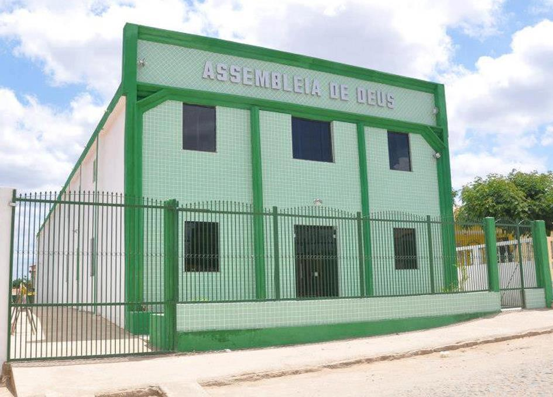
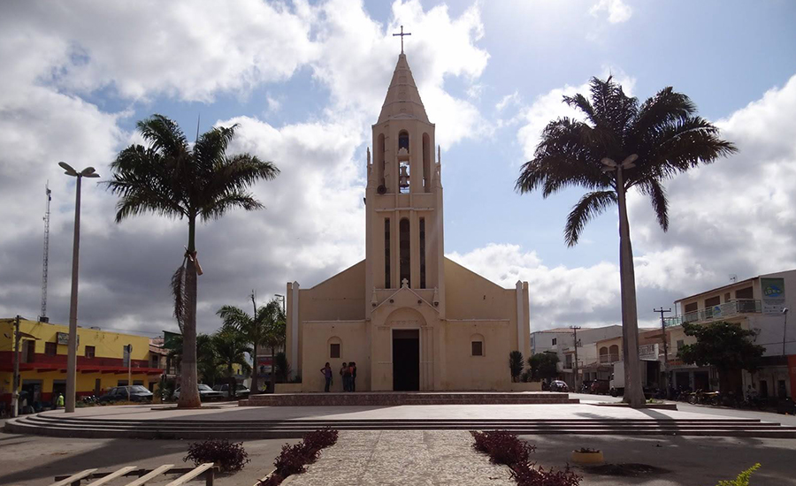

Informações técnicas sobre relevo, população, IDH etc.
| INFORMAÇÕES | |
|---|---|
| Municípios limítrofes | Norte: Santa Quitéria e Catunda. Leste: Boa Viagem. Sul: Boa Viagem e Independência. Oeste: Tamboril. |
| Fundação | 22 de novembro de 1951 (69 anos) |
| Área total | 892,538 km² |
| Clima | Tropical quente semiárido |
| IDH | 0,610 |
| PIB | R$ 7.436,65 |
| INFORMAÇÕES TERRITORIAIS | |
|---|---|
| Número de habitantes | 17 234 habitantes |
| Superfície de Monsenhor Tabosa |
89 364 hectares
893,64 km² |
| Densidade populacional | 19,3 ha./km² |
| Altitude de Monsenhor Tabosa | 670 metros de altitude |
| Coordenadas geográficas decimais |
Latitude:
-4.78953
Longitude: -40.0606 |
| Coordenadas geográficas sexagesimais | Latitude: 4° 47' 22'' Sul , Longitude: 40° 3' 38'' Oeste |
| INFORMAÇÕES DO MUNICÍPIO | |
|---|---|
| Endereço da Prefeitura Municipal de Monsenhor Tabosa |
Monsenhor Tabosa
Prefeitura de Monsenhor Tabosa
Praça 07 de Setembro, Nº 15 - Centro Monsenhor Tabosa - CE, 63.780-000 Brasil |
| Telefone da prefeitura |
(88) 3696-2171
Internacional: +55 88 3696-2171 |
| Fax |
(88) 3696-1205
Internacional: +55 88 3696-1205 |
| Endereço electrónicoda prefeitura |
prefeitura.pmmt@hotmail.com
|
| Site oficial do município | monsenhortabosa.ce.gov.br |
| INFORMAÇÕES DO ADMINISTRATIVAS | ||
|---|---|---|
| Prefeito de Monsenhor Tabosa | FRANCISCO JEOVÁ SOUSA CAVALCANTE | |
| Partido politico | PDT | |
| INFORMAÇÕES DE TRANSPORTE | |
|---|---|
| Transporte urbano disponível | - |
| Aeroporto |
Aeroporto de Sobral
127.1 km
Aeroporto Internacional Pinto Martins
203.7 km
Aeroporto Pinto Martins
226.5 km
|
| INFORMAÇÕES DE DISTÂNCIA A OUTRAS CIDADES | ||
|---|---|---|
| São Paulo : 2204 km | Rio de Janeiro : 2045 km | Brasília : 1496 km |
| Salvador : 926 km | Curitiba : 2499 km | Belo Horizonte : 1725 km |
| Manaus : 2225 km | Fortaleza : 206 km mais perto | Recife : 678 km |
| Goiânia : 1661 km | Belém : 1009 km | Porto Alegre : 3045 km |
| Guarulhos : 2184 km | Campinas : 2153 km | São Luís : 535 km |
| Distância calculada em linha reta! | ||
Conheça mais sobre a história de Monsenhor Tabosa.
Suas origens remontam ao Século XIX e têm como precedente gregário Teodoro de Melo e seus escravos, conhecidos estes por Pretos Teles. Dessa propriedade, denominada de Forquilha e posteriormente de Telha, constam como adquirentes fragmentários, Inácio Gomes e Veríssimo Gomes, tendo como fatias adquiridas duas léguas de terras. Desse conjunto de moradores, reunidos a outros que posteriormente se fixariam na fazenda, nasceria a povoação que historicamente nos ocupa.
A primeira manifestação de caráter político nasceu com a criação do Distrito de Paz, provindo da Lei nº 2.011, de 6 de setembro de 1882, vinculado à jurisdição de Tamboril. Com a supressão do Município de Tamboril, conforme Dec-Lei nº 193, de 20 de maio de 1931, o já denominado Distrito de Telha transferiu-se para a jurisdição de Santa Quitéria. Retornou à jurisdição do Município de Tamboril, quando da restauração deste, conforme Dec-lei nº 1.156, de 4 de dezembro de 1933, com a denominação de Arraial da Telha. Vale ressaltar, no entanto e a título de melhores esclarecimentos, que o locativo Telha nada tem com a produção ceramista, a exemplo de outro Distrito de igual nome (Iguatu). Trata-se, segundo tradição oral, do fato de terem sido encontrados, quando da edificação da capela, remanescentes de antiga olaria, além de resíduos probatórios desse tipo de cerâmica. Sua elevação à categoria de Vila provém do Dec-Lei nº 169, de 31 de março de 1938, e à categoria de Município na forma da Lei nº 1.153, de 22 de novembro de 1951, tendo sido instalado a 25 de março de 1955.
As primeiras manifestações de apoio eclesial provêm de doação do respectivo patrimônio, constante de 100 braças de terras e a ter por doadores Veríssimo Gomes e Inácio Gomes. Esse patrimônio teve por finalidade a edificação da primitiva capela da qual consta como padroeiro São Sebastião. As obras de conclusão desse templo, já que do início não restam informações, datam do ano de 1868, graças ao trabalho realizado pelo padre José Antônio de Carvalho e que seria também o seu primeiro vigário. A igreja matriz, obra igualmente do padre Carvalho, consta de reforma e ampliação dessa primitiva capela, tendo como referencial de tempo o ano de 1884. Com a criação da Paróquia, em data que a História não registra, esta ficou vinculada juridicamente ao Bispado de Sobral.
Entre 1936 e 1937 foi criado o distrito de Monsenhor Tabosa (ex-Forquilha e ex-Telha), sendo esse distrito no município de Tamboril. Em 1951 foi elevado à categoria de município, desmembrado de Tamboril, mas só foi instalado em 1955. Em 1963 são criados dois distritos: Nossa Senhora do Livramento e Barreiros. Até hoje a cidade só tem dois distritos além do distrito-sede
Entre 1936 e 1937 foi criado o distrito de Monsenhor Tabosa (ex-Forquilha e ex-Telha), sendo esse distrito no município de Tamboril. Em 1951 foi elevado à categoria de município, desmembrado de Tamboril, mas só foi instalado em 1955. Em 1963 são criados dois distritos: Nossa Senhora do Livramento e Barreiros. Até hoje a cidade só tem dois distritos além do distrito-sede.
Saiba mais sobre os melhores lugares e o que fazer em Monsenhor Tabosa.
 Paróquia de São Sebastião

Veja como chegar nos melhores pontos de Monsenhor Tabosa